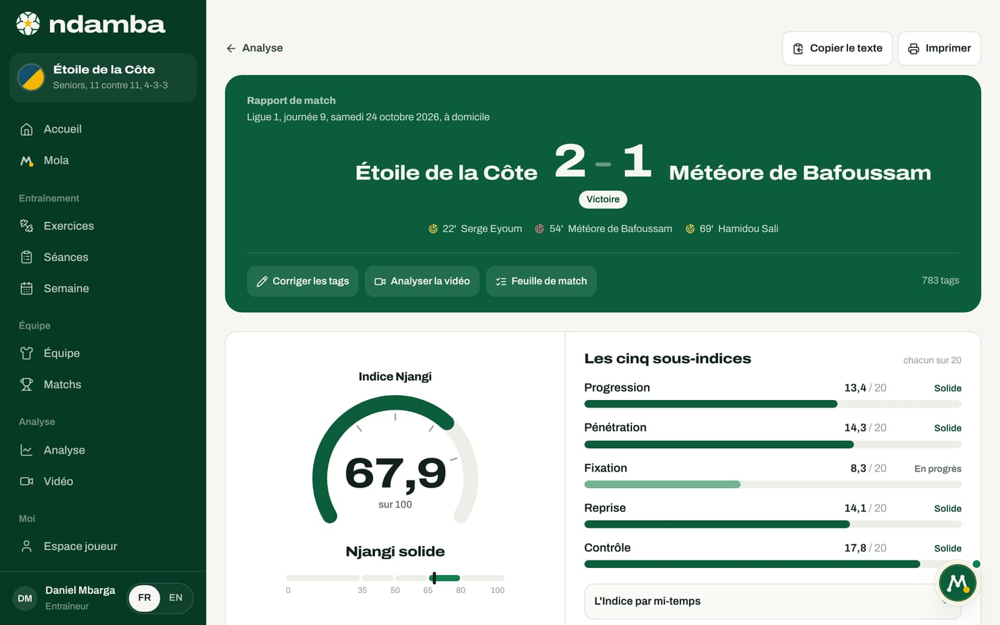
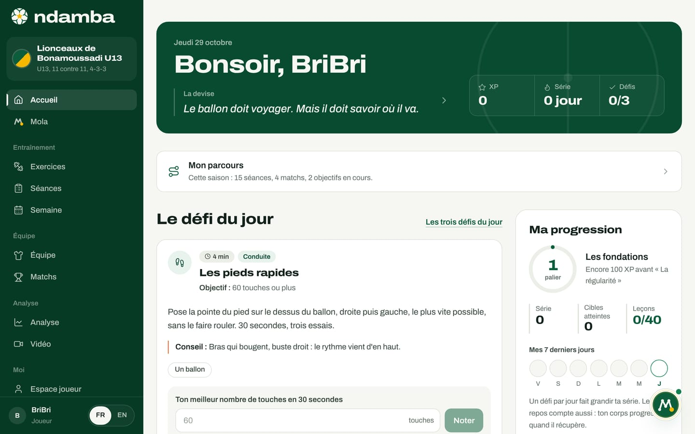
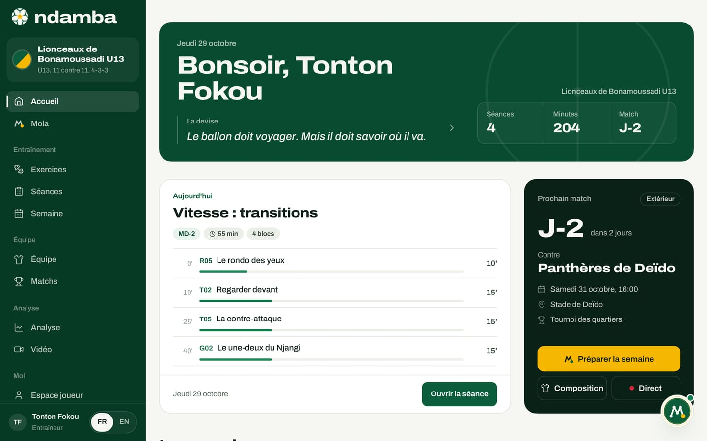
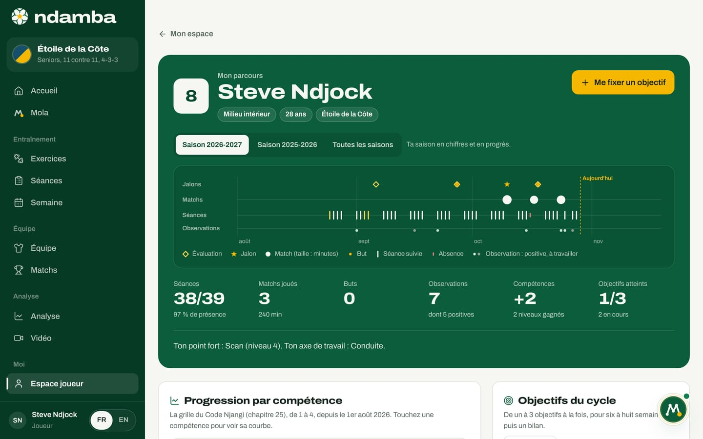
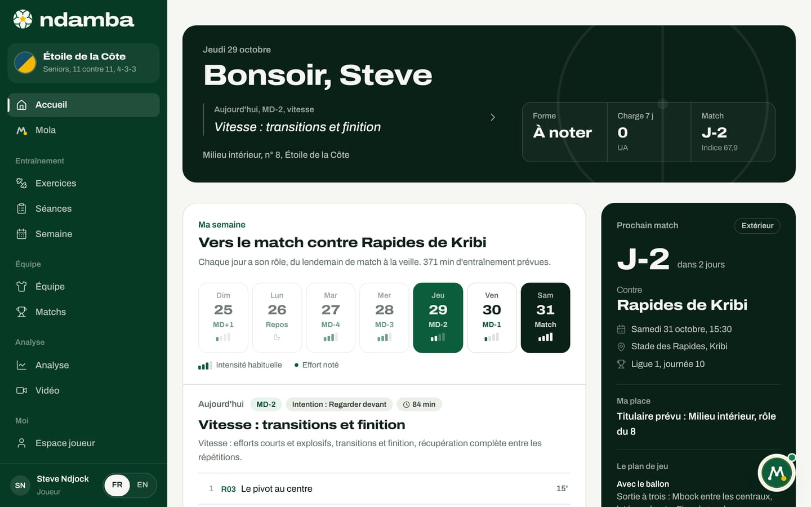

Le plan 2026‑2041 : cinq étapes vers le trophée
Quinze ans, trois Coupes du monde, cinq étapes. Pour chacune, ce qui se passe sur le terrain, ce que fait Ndamba, qui s’engage, les objectifs proposés et les risques à réduire.
11 min de lecture
Le chapitre précédent a posé le diagnostic : le talent ne manque pas à l’Afrique, c’est la continuité qui manque. Ce chapitre transforme ce diagnostic en calendrier. Entre 2026 et 2041, trois Coupes du monde se jouent : en 2030, en 2034 et en 2038. Le but de Ndamba est qu’une nation africaine, le Cameroun d’abord, soulève le trophée dans les quinze prochaines années. Le chemin proposé tient en cinq étapes. Pour chacune : ce qui se passe dans le football, ce que fait l’application, qui est impliqué, ce qu’il faut mesurer et ce qui peut mal tourner.
Ce que ce plan est, et ce qu’il n’est pas
Un plan sur quinze ans n’est pas une prévision : personne ne peut promettre un trophée. On peut en revanche organiser les années pour que chacune prépare la suivante, et vérifier en chemin que l’on avance.
Deux règles encadrent tout ce qui suit. D’abord, aucun partenariat n’est signé à ce jour : quand ce chapitre parle de la fédération, d’une ligue ou des clubs pilotes, il décrit un but. Ensuite, l’outil est décrit tel qu’il est : quand une étape demande une fonction qui n’existe pas encore (les comptes, la synchronisation, les paiements), le texte le dit et renvoie au chapitre 26.
La ligne directrice, elle, est simple : un seul modèle de jeu, celui du Code Njangi, enseigné de la même façon de l’école de foot à l’équipe A, et une seule mesure, l’Indice Njangi, pour vérifier saison après saison que les joueurs possèdent vraiment avec intention.


La fenêtre de quinze ans et l’âge des joueurs
Le Cameroun détient le record africain avec huit participations à la Coupe du monde, et son meilleur résultat reste le quart de finale de 1990. Il a pourtant manqué l’édition 2026 : deuxième de son groupe derrière le Cap-Vert, puis battu 1‑0 par la RD Congo dans le temps additionnel de la demi-finale des barrages africains, à Rabat, le 14 novembre 2025. Aucune nation africaine n’a encore gagné la Coupe du monde ; le meilleur résultat du continent est la demi-finale du Maroc en 2022.
Dans la fenêtre, le calendrier est connu en grande partie :
- 2030 : Maroc, Espagne et Portugal, avec trois matchs du centenaire en Uruguay, en Argentine et au Paraguay. Un pays africain coorganise.
- 2034 : Arabie saoudite.
- 2038 : pas encore attribuée (octobre 2026).
- Chaque année, la Coupe du monde U17, à 48 équipes depuis 2025, organisée au Qatar de 2025 à 2029 : un repère annuel pour chaque génération.
Le calcul qui structure tout le plan est un calcul d’âge. Un joueur qui a 12 ans en 2026 en aura 16 en 2030, 20 en 2034 et 24 en 2038. Un joueur de 16 ans en 2026 aura 20, puis 24, puis 28 ans.
| Âge en 2026 | En 2030 | En 2034 | En 2038 | Exemple |
|---|---|---|---|---|
| 10 ans | 14 ans | 18 ans | 22 ans | Kaydoudou, le cadet des deux frères du roman |
| 12 ans | 16 ans | 20 ans | 24 ans | BriBri, l’aîné |
| 14 ans | 18 ans | 22 ans | 26 ans | Le milieu de la génération |
| 16 ans | 20 ans | 24 ans | 28 ans | Les U17 d’aujourd’hui |
La génération qui a entre 12 et 16 ans en 2026 aura entre 20 et 24 ans en 2034, et entre 24 et 28 ans en 2038, l’âge de la pleine maturité d’un footballeur. En 2030, elle sera encore chez les jeunes : 2030 est donc l’année des sélections U15, U17 et U20, et la première épreuve visible pour le football africain, puisque le Maroc coorganise.
Le mantra de l’application dit « en 2030 ou en 2034 ». Le plan garde les trois rendez-vous ouverts, mais il fixe ses objectifs proposés sur la génération formée par la méthode : un quart de finale ou mieux en 2034, le trophée en 2038. Si l’équipe A actuelle peut briller plus tôt, rien dans le plan ne l’en empêche.


Étape 1. 2026 à 2027 : le premier cercle
Dans le football. Des clubs et des académies pilotes, à Douala, à Yaoundé et à Bafoussam, et dans la diaspora, adoptent le Code Njangi et utilisent Ndamba chaque semaine : des séances construites sur les sept intentions, une semaine planifiée de MD-4 à MD-1, des matchs codés en direct depuis le bord du terrain.
Ce que fait Ndamba. Tout ce qui sert cette étape existe déjà :
- les 64 exercices et les deux livres, ouverts à tous dans la formule Gratuit ;
- le constructeur de séances, la page Semaine et Préparer la semaine avec Mola, l’analyse en direct et le rapport avec l’Indice Njangi, dans Coach Pro ;
- toutes les catégories d’une académie, des U8 à l’équipe première, dans Club et académie ;
- pour les enfants, les défis du jour, les 40 Leçons du Ballon et le carnet, présentés dans Joueur Premium, avec l’encadré Pour les parents sur l’accueil.


Qui est impliqué. Les éducateurs et les entraîneurs des clubs pilotes, leurs directeurs techniques, les parents des plus jeunes, et l’équipe de Ndamba (William Foteping, Lemon Network Solutions), qui forme et accompagne.
Objectifs proposés.
- 20 clubs et académies pilotes qui utilisent Ndamba chaque semaine.
- 100 entraîneurs formés à la méthode.
- 1 000 matchs codés, pour construire les premières valeurs de référence de l’Indice Njangi par âge.
Pourquoi 1 000 matchs ? Le rapport de match le dit dans « Ce que mesure chaque sous-indice » : « Les repères sont internes à la méthode Njangi, à calibrer sur vos propres matchs. » Les seuils de lecture (35, 50, 65 et 80 sur 100) viennent du livre. Pour savoir ce qu’est un bon Indice chez des U13 ou des U17, il faut des centaines de matchs codés par catégorie, avec les mêmes définitions. Ces références par âge sont le premier actif que le plan construit.
Risques et parades.
- Les données restent sur chaque appareil. Sans comptes, compter les matchs codés suppose que chaque club pilote partage volontairement ses sauvegardes, exportées depuis Réglages. Parade : une sauvegarde par semaine, un accord écrit avec chaque club, et les précautions du chapitre 25 pour les données d’enfants.
- Le codage demande de la rigueur. Un match mal codé fausse la référence. Parade : les mêmes codes pour tous (chapitre 12) et une relecture avec Corriger les tags.
- L’élan du début retombe, les moyens manquent. Parade : peu de clubs au départ, suivis de près ; une application légère, utilisable sur téléphone ; une éducation qui reste gratuite.
Étape 2. 2028 à 2029 : la ligue
Dans le football. Une ligue de jeunes adopte le modèle de jeu commun : ses clubs entraînent les mêmes intentions, codent leurs matchs de la même façon et parlent le même vocabulaire.
Ce que fait Ndamba. Cette étape demande des fonctions prévues mais pas encore construites : les comptes, la synchronisation entre appareils et les paiements doivent être en service, ainsi que des modules de formation des entraîneurs. Les outils d’aujourd’hui restent la base : Club et académie pour chaque club, et Fédération, sur devis, une formule qui s’adresse aussi aux ligues.
Qui est impliqué. La ligue, les directeurs techniques des clubs, les entraîneurs formés à l’étape 1 et les analystes.
Objectifs proposés.
- 300 équipes qui jouent avec le modèle de jeu commun.
- Des valeurs de référence de l’Indice Njangi pour chaque catégorie d’âge.
- Les premiers entraîneurs certifiés Njangi.
Risques et parades.
- Passer du local au partagé. La synchronisation touchera des données d’enfants. Parade : appliquer les principes du chapitre 25 (accord des parents, chacun ne voit que ce qui le concerne) avant toute mise en service.
- Les paiements tardent. La page Premium annonce Mobile Money et cartes bancaires, mais ils ne sont pas branchés. Parade : une ligue se traite sur devis, sans attendre le paiement en ligne.
Étape 3. 2030 : les sélections de jeunes
Dans le football. Les sélections U15, U17 et U20 travaillent avec le modèle de jeu national dans Ndamba. La Coupe du monde U17, chaque année, montre si les principes tiennent face aux meilleures nations. Les joueurs de la diaspora sont repérés et suivis avec les mêmes repères que ceux formés au pays. Et l’Afrique coorganise la Coupe du monde, au Maroc.
Ce que fait Ndamba. La formule Fédération réunit le modèle de jeu national, la formation des entraîneurs et un accompagnement dédié. Le parcours de chaque joueur montre ses séances, ses matchs, les observations de ses entraîneurs et ses objectifs, saison après saison. Le rapport et la vidéo servent aux matchs des sélections. Aujourd’hui, le rôle Fédération ou ligue ouvre le même accueil que celui d’un entraîneur ; une vue qui rassemble plusieurs sélections reste à construire.


Qui est impliqué. La direction technique nationale (pour le Cameroun, la FECAFOOT, comme objectif de partenariat), les sélectionneurs de jeunes et leurs analystes, les clubs formateurs du premier cercle et de la ligue.
Objectifs proposés.
- Les sélections U15, U17 et U20 travaillent toutes avec le même modèle de jeu national.
- Chaque match des trois sélections est codé avec les mêmes codes que dans les clubs.
- Une liste de joueurs de la diaspora suivis avec les mêmes repères.
Risques et parades.
- Le partenariat n’existe pas encore. Parade : arriver avec des preuves, les références par âge des étapes 1 et 2.
- Les staffs changent. Parade : un modèle de jeu écrit et partagé ne dépend pas d’une seule personne ; c’est l’argument central du chapitre 22.
- On juge trop vite un tournoi de jeunes. Parade : lire l’Indice et la progression sur plusieurs saisons.
Étape 4. 2031 à 2034 : la génération
Dans le football. Les joueurs qui avaient entre 12 et 16 ans en 2026 arrivent en équipe A ; en 2034, ils ont entre 20 et 24 ans. L’Indice Njangi les a suivis depuis l’académie : on sait comment ils possèdent, ce qu’ils ont travaillé et à quel âge ils ont franchi chaque cap. La Coupe du monde 2034 se joue en Arabie saoudite.
Ce que fait Ndamba. L’espace de performance des joueurs de 16 ans et plus (la semaine du match, la forme et la charge, le dernier match, les objectifs), le parcours sur toutes les saisons, les rapports et la vidéo pour le staff de l’équipe A.


Qui est impliqué. Le sélectionneur et son staff, les analystes, les clubs des internationaux, au pays et à l’étranger, et les joueurs eux-mêmes.
Objectif proposé. En 2034, un quart de finale ou mieux. C’est le meilleur résultat de l’histoire du Cameroun, celui de 1990, quand Roger Milla, à 38 ans, marquait quatre buts et dansait au poteau de corner.
Risques et parades.
- La génération se disperse. Les meilleurs partent jeunes à l’étranger. Parade : le parcours suit le joueur, pas le club, et les clubs de la diaspora font partie du premier cercle.
- La charge use une génération précieuse. Parade : la forme du jour et la charge de séance existent déjà dans l’espace joueur ; il faut les remplir et les lire.
Étape 5. 2035 à 2041 : le trophée
Dans le football. Toute la pyramide parle le même football, de l’école de foot à l’équipe A. D’autres fédérations africaines adoptent le modèle. En 2038, la génération formée par la méthode a entre 24 et 28 ans : BriBri en a 24, Kaydoudou 22. Le pays organisateur n’est pas encore connu.
Ce que fait Ndamba. La même plateforme, dans plus de langues et pour plus de fédérations, avec des années de matchs codés derrière elle : les références par âge deviennent un bien commun du football africain.
Qui est impliqué. Les fédérations qui adoptent le modèle, leurs ligues, leurs clubs, et une génération entière formée au même jeu.
Objectifs proposés. En 2038, le trophée. D’ici 2041, une génération complète formée dans un seul modèle de jeu, et d’autres fédérations africaines qui travaillent avec lui.
Risques et parades. Le modèle peut se figer : on le relit à partir des matchs codés, qui montrent ce qui marche encore. La croissance peut diluer l’exigence : la certification des entraîneurs et des définitions de codage identiques partout la protègent.
Les quinze années en un tableau
La troisième colonne ne contient que des faits connus en octobre 2026. La dernière contient le plan : des objectifs proposés.
| Année | Âge des 12 à 16 ans de 2026 | Rendez-vous connus | Étape et objectifs proposés |
|---|---|---|---|
| 2026 | 12 à 16 | Coupe du monde aux États-Unis, au Canada et au Mexique, sans le Cameroun | Étape 1 : premiers clubs pilotes |
| 2027 | 13 à 17 | Mondial U17 au Qatar | Étape 1 : 20 pilotes, 100 entraîneurs, 1 000 matchs codés |
| 2028 | 14 à 18 | Mondial U17 au Qatar | Étape 2 : comptes, synchronisation, paiements |
| 2029 | 15 à 19 | Mondial U17 au Qatar | Étape 2 : 300 équipes, références par âge, entraîneurs certifiés |
| 2030 | 16 à 20 | Coupe du monde au Maroc, en Espagne et au Portugal | Étape 3 : U15, U17 et U20 sur le modèle national |
| 2031 | 17 à 21 | Étape 4 : la génération approche de l’équipe A | |
| 2032 | 18 à 22 | Étape 4 | |
| 2033 | 19 à 23 | Étape 4 : le groupe de 2034 se forme | |
| 2034 | 20 à 24 | Coupe du monde en Arabie saoudite | Étape 4 : un quart de finale ou mieux |
| 2035 | 21 à 25 | Étape 5 : d’autres fédérations adoptent le modèle | |
| 2036 | 22 à 26 | Étape 5 | |
| 2037 | 23 à 27 | Étape 5 : la préparation de 2038 | |
| 2038 | 24 à 28 | Coupe du monde, pays non encore désigné | Étape 5 : le trophée |
| 2039 | 25 à 29 | Étape 5 | |
| 2040 | 26 à 30 | Étape 5 | |
| 2041 | 27 à 31 | Étape 5 : une génération complète formée dans un seul modèle |
Le Mondial U17 se joue chaque année ; seules les éditions dont l’hôte est connu figurent ici.
Comment suivre le plan
Les trois objectifs de l’étape 1 se comptent simplement : des clubs, des entraîneurs, des matchs codés. L’application produit la matière de ces comptes, mais ne les remonte pas d’elle-même, puisque rien ne quitte l’appareil sans comptes. Le chapitre 26 détaille les indicateurs et la façon de les mesurer.